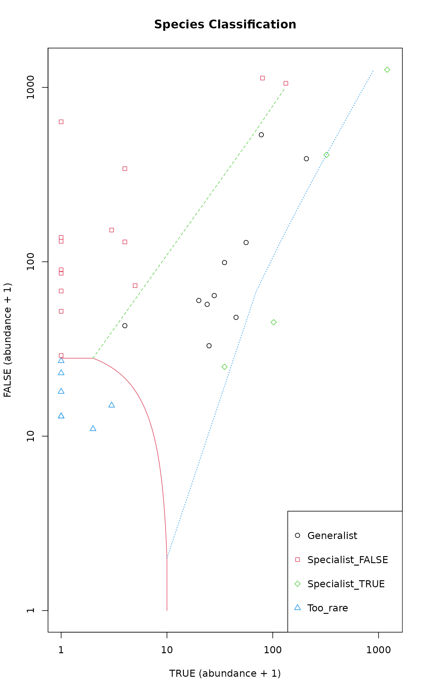

Multinomial Species Classification Method (CLAM)
clamtest.RdThe CLAM statistical approach for classifying generalists and specialists in two distinct habitats is described in Chazdon et al. (2011).
Arguments
- comm
Community matrix, consisting of counts.
- groups
A vector identifying the two habitats. Must have exactly two unique values or levels. Habitat IDs in the grouping vector must match corresponding rows in the community matrix
comm.- coverage.limit
Integer, the sample coverage based correction is applied to rare species with counts below this limit. Sample coverage is calculated separately for the two habitats. Sample relative abundances are used for species with higher than or equal to
coverage.limittotal counts per habitat.- specialization
Numeric, specialization threshold value between 0 and 1. The value of \(2/3\) represents ‘supermajority’ rule, while a value of \(1/2\) represents a ‘simple majority’ rule to assign shared species as habitat specialists.
- npoints
Integer, number of points used to determine the boundary lines in the plots.
- alpha
Numeric, nominal significance level for individual tests. The default value reduces the conventional limit of \(0.05\) to account for overdispersion and multiple testing for several species simultaneously. However, the is no firm reason for exactly this limit.
- x, object
Fitted model object of class
"clamtest".- xlab, ylab
Labels for the plot axes.
- main
Main title of the plot.
- pch, col.points
Symbols and colors used in plotting species groups.
- lty, col.lines
Line types and colors for boundary lines in plot to separate species groups.
- position
Position of figure legend, see
legendfor specification details. Legend not shown ifposition = NULL.- ...
Additional arguments passed to methods.
Details
The method uses a multinomial model based on estimated
species relative abundance in two habitats (A, B). It minimizes bias
due to differences in sampling intensities between two habitat types
as well as bias due to insufficient sampling within each
habitat. The method permits a robust statistical classification of
habitat specialists and generalists, without excluding rare species
a priori (Chazdon et al. 2011). Based on a user-defined
specialization threshold, the model classifies species into
one of four groups: (1) generalists; (2) habitat A specialists; (3)
habitat B specialists; and (4) too rare to classify with confidence.
Value
A data frame (with class attribute "clamtest"),
with columns:
Species: species name (column names fromcomm),Total_*A*: total count in habitat A,Total_*B*: total count in habitat B,Classes: species classification, a factor with levelsGeneralist,Specialist_*A*,Specialist_*B*, andToo_rare.
*A* and *B* are placeholders for habitat names/labels found in the
data.
The summary method returns descriptive statistics of the results.
The plot method returns values invisibly and produces a bivariate
scatterplot of species total abundances in the two habitats. Symbols and
boundary lines are shown for species groups.
References
Chazdon, R. L., Chao, A., Colwell, R. K., Lin, S.-Y., Norden, N., Letcher, S. G., Clark, D. B., Finegan, B. and Arroyo J. P.(2011). A novel statistical method for classifying habitat generalists and specialists. Ecology 92, 1332--1343.
Author
Peter Solymos solymos@ualberta.ca
Note
The code was tested against standalone CLAM software provided on the website of Anne Chao (which were then at http://chao.stat.nthu.edu.tw/wordpress); minor inconsistencies were found, especially for finding the threshold for 'too rare' species. These inconsistencies are probably due to numerical differences between the two implementation. The current R implementation uses root finding for iso-lines instead of iterative search.
The original method (Chazdon et al. 2011) has two major problems:
It assumes that the error distribution is multinomial. This is a justified choice if individuals are freely distributed, and there is no over-dispersion or clustering of individuals. In most ecological data, the variance is much higher than multinomial assumption, and therefore test statistic are too optimistic.
The original authors suggest that multiple testing adjustment for multiple testing should be based on the number of points (
npoints) used to draw the critical lines on the plot, whereas the adjustment should be based on the number of tests (i.e., tested species). The function uses the same numerical values as the original paper, but there is no automatic connection betweennpointsandalphaarguments, but you must work out the adjustment yourself.
Examples
data(mite)
data(mite.env)
sol <- with(mite.env, clamtest(mite, Shrub=="None", alpha=0.005))
summary(sol)
#> Two Groups Species Classification Method (CLAM)
#>
#> Specialization threshold = 0.6666667
#> Alpha level = 0.005
#>
#> Estimated sample coverage:
#> FALSE TRUE
#> 1.0000 0.9996
#>
#> Minimum abundance for classification:
#> FALSE TRUE
#> 27 9
#>
#> Species Proportion
#> Generalist 10 0.286
#> Specialist_FALSE 14 0.400
#> Specialist_TRUE 4 0.114
#> Too_rare 7 0.200
head(sol)
#> Species Total_FALSE Total_TRUE Classes
#> 1 Brachy 534 77 Generalist
#> 2 PHTH 89 0 Specialist_FALSE
#> 3 HPAV 389 207 Generalist
#> 4 RARD 85 0 Specialist_FALSE
#> 5 SSTR 22 0 Too_rare
#> 6 Protopl 26 0 Too_rare
plot(sol)
